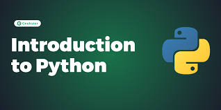
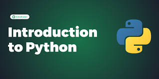
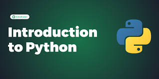

Desenvolvimento Web: Com frameworks como Django e Flask, Python é usado para construir sites e aplicações web complexas. Análise de Dados e Inteligência Artificial: É a linguagem preferida para ciência de dados, aprendizado de máquina e IA. Bibliotecas como Pandas, NumPy e TensorFlow são essenciais para essa área. Automação de Tarefas: Você pode usar Python para criar scripts que automatizam tarefas repetitivas no seu computador, como organizar arquivos ou enviar e-mails. Automação de Testes: É muito comum o uso de Python para automação de testes de software, sendo muito utilizada para a criação de cenários de teste. Desenvolvimento de Jogos: Embora não seja a primeira escolha para jogos de alto desempenho, é usada em bibliotecas como Pygame para criar jogos 2D. Criptografia: Existem diversas bibliotecas para realizar criptografia. Por que Python é tão popular? Simplicidade: Sua sintaxe limpa e organizada permite que os desenvolvedores escrevam menos código para realizar tarefas complexas. Comunidade Ativa: Possui uma comunidade enorme e uma vasta quantidade de recursos, tutoriais e bibliotecas disponíveis, o que torna o aprendizado e a resolução de problemas mais fáceis. Versatilidade: Python é uma linguagem multiplataforma, ou seja, o código escrito em um sistema operacional (como Windows) pode rodar em outro (como Linux ou macOS) sem grandes modificações.
